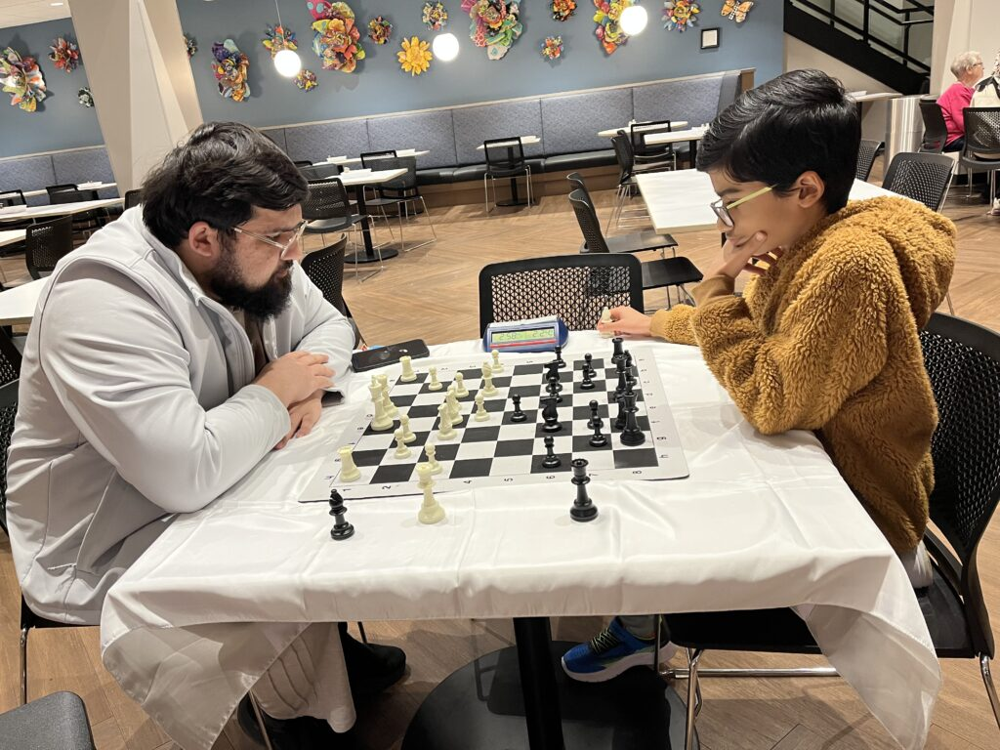

STUDENT • BUILDER • CHESS PLAYER • PROBLEM SOLVER
Om
Student interested in science, engineering, artificial intelligence, mathematics, chess, and building things that solve real problems.
AT A GLANCE
Highlights
A few things that represent my interests and work.
Personalized Allergy Prediction
Machine-learning science project using environmental and personal data.
View details → ENGINEERINGWhispering Hat
Wearable assistive-technology prototype using computer vision and sensors.
View details → CHESSCompetitive Chess
Tournament play, rating progress, selected games, and lessons from competition.
View details →At a glance
My work in numbers
ABOUT ME
Curious about how things work.
I enjoy learning by building, testing, and improving.
My interests include science, engineering, artificial intelligence, robotics, mathematics, chess, writing, and competitions. I especially like projects where I can combine ideas from several subjects to solve a practical problem.
This site is a collection of my work, achievements, activities, and things I am proud to have learned.
“The best way to understand something is to try to build it, break it, and then build it again.”Om — personal learning philosophy
ACADEMICS
Learning & coursework
Courses, academic interests, competitions, and independent learning.
Advanced Math Path
Coursework, competitions, problem solving, and favorite areas of math.
Open →Science Studies
Biology, physical science, experiments, research, and science-fair work.
Open →Programming & AI
Python, web development, computer vision, machine learning, and data work.
Open →SCIENCE & ENGINEERING
Projects
Selected projects with detailed pages showing the idea, build, results, and lessons.
Personalized Allergy Prediction
Can personalized data predict next-day allergy symptoms better than pollen alone?
Whispering Hat
A wearable system that uses a camera, sensors, and audio feedback.
Autonomous Robot Car
A Raspberry Pi robot used to experiment with sensors, motors, and navigation.
TankFlare
A live site that uses AI to check fish, plant, and decor compatibility before you buy.
RECOGNITION
Awards & honors
Competitions, academic recognition, certificates, and notable accomplishments.
CHESS
Competitive chess
Tournament experience, ratings, selected games, and what chess has taught me.
View chess profileBUILDING SOCIETY
Chess as a way to give back
Volunteering, outreach, and fundraising work that uses chess to reach students and families across two continents.

RMH — Introducing Chess
Weekly chess evenings at the largest Ronald McDonald House in the country.
Open →
Arise — Chess-Loaded Tablets
Raising funds and shipping offline chess tools to students in East Africa.
Open →
Arise School — New Beginnings
Building a chess club from scratch at a school in the foothills of Kilimanjaro.
Open →BEYOND THE CLASSROOM
Leadership, service & activities
Clubs, mentoring, volunteering, teamwork, writing, and community involvement.
Leadership & Mentoring
Teamwork, helping others learn, club roles, and project collaboration.
Open →Writing & Creative Work
Selected writing, publications, contests, reviews, or creative work.
Open →Service & Community
Volunteer work, outreach, civic participation, or other activities.
Open →SKILLS
Tools I use
Python · HTML · CSS · JavaScript · SQL
Machine Learning · Computer Vision · Data Analysis
Raspberry Pi · Cameras · Sensors · Motors · Electronics
Research · Experiment Design · Presentations · Chess Analysis